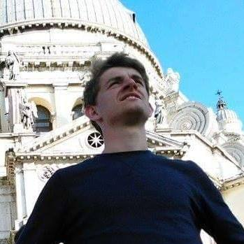
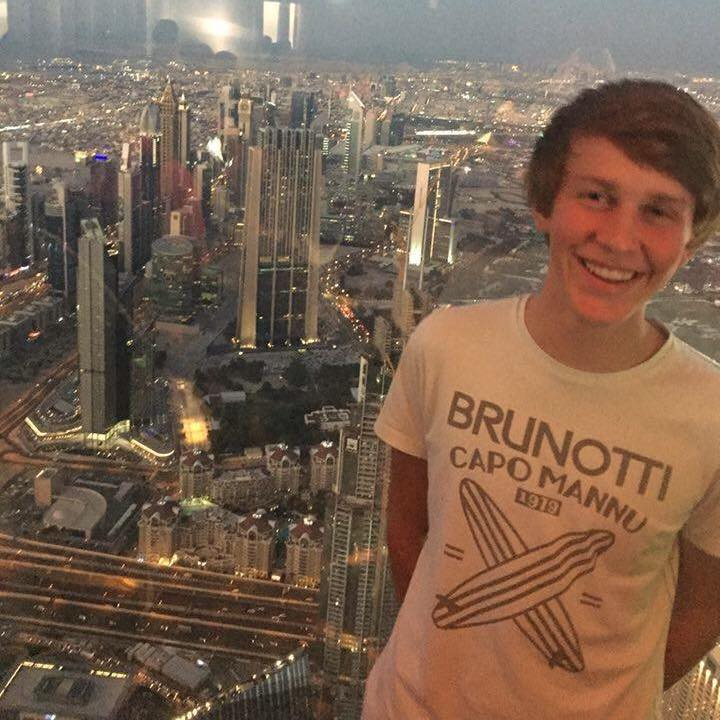
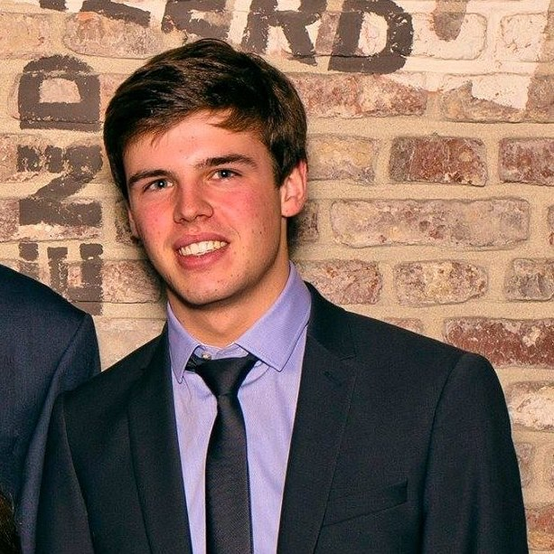

Welkom op onze site! Wij zijn Arthur Lippens, Tuur Lobel en Jens Tack. We zijn drie vrienden die de voorbije 6 jaar op het VTI te Waregem de richting industriële wetenschappen hebben gevolgd. De interesse in nieuwe technologie, wetenschappen, onderzoek,... maakte ons de keuze makkelijker om voor deze richting te kiezen. Deze richting is een ideale voorbereiding om in het hoger industrieel ingenieur te volgen/worden. Op die manier volgen wij nu de opleiding indurstrieel ingeneur aan de KU Leuven te Gent.

|
Arthur LippensIk ben Arthur Lippens. Van mijn beginjaren in mijn leven herinner ik me niet zo veel meer maar enkele dingen zijn me toch we bijgebleven. Mijn lagere school en basisschool heb ik zonder problemen door gemaakt in de basisschool in Zulte. Toen kwam een belangrijke beslissing welke richting. Moderne of Industriële Wetenschappen (IW), deze waren toch de keuzes die de school mij aanbevolen. Mijn keuze was snel gemaakt, IW. IW was dan ook de richting die ik zes jaar lang heb gevolgd in het VTI in Waregem. Deze keuze kwam vooral door de techniek die aan bod kwam in de richting. Ook doordat vele vrienden voor deze richting kozen was belangrijk. Techniek is het belangrijkste in mijn leven, ik vraag me van alle dingen af hoe ze juist werken. Na de zes jaar kwam een belangrijke keuze industrieel ingenieur of bachelor bouw. De keuze ging dus naar het eerste. Ik heb nog geen spijt van mijn keuze al had ik liever wat betere examens afgelegt. |

|
Tuur Lobel19 jaar geleden werd ik geboren in Gent. Mijn vader, Robert is afkomstig uit Gent en werkt bij Intel. Mijn moeder, afkomstig uit Anzegem is leerkracht bij VBS Nieuwenhove. Ikzelf zit in de Chiro van Nieuwenhove al van toen ik klein was. Sinds dit jaar ben ik leider geworden en geef leiding aan de ribbels (1ste-2de leerjaar). Mijn andere hobby is voetbal, dit doe ik bij White Star Desselgem beter bekent als "wiet ster". Verder organiseer ik vele evenementen met de chiro, het eerstvolgende is Vita's feestweekend. Allen welkom! |

|
Jens TackIk, Jens Tack, ben geboren op 13 november 1998. De eerste jaren van mijn leven spendeerde ik vooral thuis. Tot het moment dat ik naar de kleuterklas mocht gaan. Dit was in de school mikado te Oeselgem. Op deze school ben ik ook naar het basis onderwijs geweest. Op mijn twaalf jaar moest ik dus een keuze maken naar welke middelbare school ik wou gaan en welke richting ik zou volgen. Ik twijfelde tussen moderne en industriële wetenschappen maar door het feit dat ik erg geïnteresseerd was door allerlei soorten technologie, heb ik ervoor gekozen om naar het VTI te gaan en daar de richting IW te volgen. Tot op het heden heb ik er nog altijd geen spijt van mijn keuze en raad ik iedereen aan, die ook geïnteresseerd is door technologie, om deze richting te volgen. Na het VTI moest er opnieuw gekozen worden en heb ik dus gekozen voor industrieel ingenieur aan de KU Leuven in gent. |